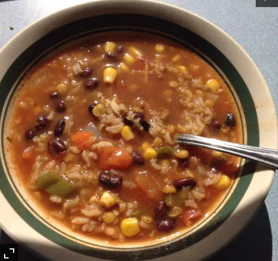

Beezie's Black Bean Soup

This soup has gained rave reviews from my non-veggie friends and family! It's bursting with healthy goodness, never mind that it tastes so wonderfully yummy! The soup loves to change, if you're cleaning out your refrigerator, be creative..
Ingredients
- 1 pound dry black beans
- 1.5 quarts water
- 1 carrot, chopped
- 1 stalk celery, chopped
- 1 large red onion, chopped
- 6 cloves garlic, crushed
- 6 cloves garlic, crushed
- 2 jalapeno pepper, seeded and minced
- 0.25cup dry lentils
- 1 (28 ounce) can peeled and diced tomatoes
-
- 2 tablespoons chili powder
- 2 teaspoons ground cumin
- ½ teaspoon dried oregano
- ½ teaspoon ground black pepper
- 3 tablespoons red wine vinegar
- 1 tablespoon salt
- ½ cup uncooked white rice
Steps
- In a large pot over medium-high heat, place the beans in three times their volume of water. Bring to a boil, and let boil 10 minutes. Cover, remove from heat and let stand 1 hour. Drain, and rinse.
- In a slow cooker, combine soaked beans and 1 1/2 quarts fresh water. Cover, and cook for 3 hours on High.
- Stir in carrot, celery, onion, garlic, bell peppers, jalapeno pepper, lentils, and tomatoes. Season with chili powder, cumin, oregano, black pepper, red wine vinegar, and salt. Cook on Low for 2 to 3 hours. Stir the rice into the slow cooker in the last 20 minutes of cooking.
- Puree about half of the soup with a blender or food processor, then pour back into the pot before serving.